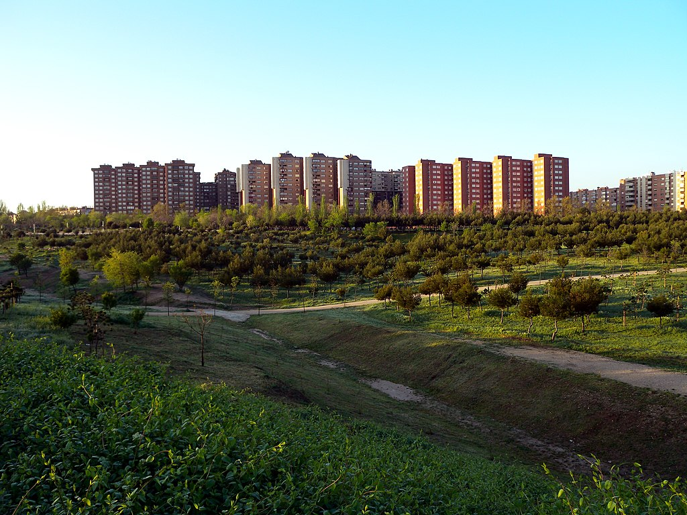

Marroquina
Marroquina es un barrio administrativo de Madrid, enclavado en el distrito de Moratalaz, al este del municipio. Tiene una superficie de 1,79 km² y un perímetro aproximado de 6747 metros.
Zona predominantemente residencial, cuenta con zonas verdes como el parque de la Cuña Verde de O'Donnell (que separa las viviendas del barrio de la M-23), el de Moratalaz o los jardines de Dionisio Ridruejo. En enero de 2022 contaba con una población de 26 402 habitantes. Limita al oeste con el barrio de Media Legua, al este con Horcajo y al sur con Vinateros.
Marroquina, al parecer un pequeño arroyo que desembocaba en el arroyo de la Media Legua, aparece señalado como lugar en el mapa del Instituto Geográfico Nacional de 1862. La urbanización del barrio se remonta a la década de 1960. Cuenta con una población de 26402 habitantes. Además, tiene la siguientes líneas de autobús:
- 20. Sol/Sevilla - Pavones
- 30. Felipe II - Pavones
- 32. Jacinto Benavente - Pavones
- 71. Manuel Becerra - Puerta de Arganda
- 100. Moratalaz - Valderrivas
- 113. Méndez Álvaro - Ciudad Lineal
- 140. Pavones - Canillejas
- E4. Felipe II - Valdebernardo